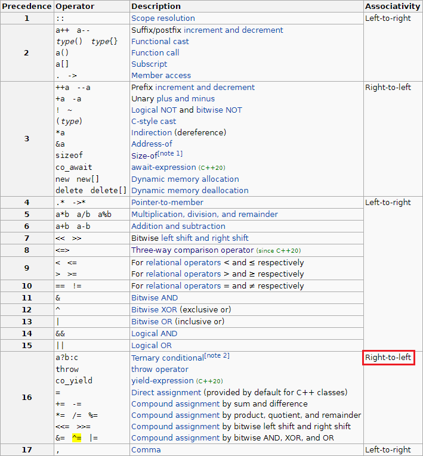

C/C++ 임시 변수 없이 swap하기
개요
두 변수의 값을 서로 맞바꾸는 상황을 생각해 봅시다.
1 | int a = 3; |
고전적인 방법으로는 임시 변수를 사용하는 방법이 있습니다.
근데 겨우 스왑하기 위해서 새로운 변수를 선언하는 것은 별로 탐탁지 않습니다.
임시 변수 없이 스왑할 수 있을까요?
xor swap
xor을 사용하여 스왑하는 유명한 방법이 있습니다.
다음의 코드로 스왑이 됩니다.
1 | x ^= y ^= x ^= y; |
맙소사. 임시 변수도 필요없고 심지어 한 줄로 간단하게 스왑이 완료됩니다.
이게 왜 가능할까요?
원리

위 표는 cppreference에서 가져온 연산자 우선순위 표입니다.
^= 연산자는 오른쪽에서 왼쪽으로 묶인다고 나와 있으므로, 위 식은 다음과 같습니다.
1 | x ^= (y ^= (x ^= y)); |
연산의 순서에 따른 x, y 값을 살펴보면 다음과 같습니다.
| 연산 | x | y |
|---|---|---|
| 초기 상태 | x | y |
| (x ^= y) | x ^ y | y |
| (y ^= (x ^= y)) | x ^ y | x |
| x ^= (y ^= (x ^= y)) | y | x |
한계
정말 좋은 방법이네요!
그럼 이 방법으로 swap하면 되겠네요?!
아쉽게도, 여러 가지 한계점을 안고 있는 방법입니다.
첫째, Undefined Behavior
결론부터 말해보자면, C에서는 항상 UB입니다. C++에서는 버전에 따라 달라집니다.
왜 UB인지 지금부터 알아 봅시다.
C는 기본적으로 ^=와 같은 복합대입연산자에 대해서 왼쪽의 피연산자와 오른쪽의 피연산자 중 어느 쪽을 먼저 평가할지 정해주지 않았습니다. 따라서 컴파일러는 어떤 순서로 평가해도 상관 없으며, 동일한 식에 대해서도 매번 다른 순서로 평가할 수도 있습니다.
잠깐!
위에서 말한 결합법칙에 의해 항상 오른쪽에서부터 순서대로 평가되는 게 아닌가요?
평가와 결합은 서로 다릅니다. 오른쪽부터 결합되는 것은 보장되지만, 어느 쪽을 먼저 평가할지는 모른다는 것이죠. 이는 괄호를 쳐도 어쩔 수 없는 부분입니다. 위에서 설명한 흐름은 오른쪽부터 평가했을 때이고, 만약 왼쪽부터 평가하면 어떻게 될까요?
x와 (y ^= (x ^= y)). 왼쪽부터 평가하게 되면 기존의 x값을 그대로 취합니다. 이후 오른쪽을 평가하면 그 결과값은 x이며, 최종적으로 x ^= x라는 식이 되어 x에는 0이 들어가게 됩니다.
그럼 C++은 어떻게 다를까요? C++17 이전까지는 C와 마찬가지로 UB였습니다.
하지만 C++17부터는 레퍼런스에 "The right operand is sequenced before the left operand."라는 내용이 등장합니다. 즉, 오른쪽을 먼저 평가하는 것이 보장되며 더 이상 UB가 아니게 되었습니다.
둘째, 정수형을 제외한 나머지 자료형
실수형에 대해서는 xor 연산을 사용할 수 없습니다.
대신 덧셈 및 뺄셈을 통해 구현할 수는 있습니다.
1 | double a = 3.14; |
하지만 이 방법도 객체에 대해서는 따로 연산자를 오버로딩하지 않는 이상 사용할 수 없습니다.
셋째, 의외로 느리다
느립니다. 임시 변수를 이용하는 것보다요.
비트 연산자가 언제나 항상 빠르다고 맹신하는 사람들에겐 통수를 치는 순간이죠.
On modern CPU architectures, the XOR technique is considerably slower than using a temporary variable to do swapping. One reason is that modern CPUs strive to execute instructions in parallel via instruction pipelines. In the XOR technique, the inputs to each operation depend on the results of the previous operation, so they must be executed in strictly sequential order. If efficiency is of tremendous concern, it is advised to test the speeds of both the XOR technique and temporary variable swapping on the target architecture.
위키피디아에서는 위와 같이 설명합니다.
또한, 어셈블리로 봤을 때도 차이는 확연합니다. xor swap은 MOV 명령 3번, XOR 명령 3번이 들어갑니다. 하지만 임시 변수를 이용한 swap은 MOV 명령 4번으로 완료됩니다. (링크)
결론
임시 변수를 이용한 swap을 사용하는 것이 이득입니다.
임시 변수가 스택 영역에 남는 것이 싫다면 스코프로 감싸주는 방법이 있습니다.
스코프를 벗어나면 임시 변수는 소멸됩니다.
1 | int a = 3; |
C++에서는 std::swap 함수를 제공하므로 이를 가져다 쓰면 됩니다.
C++11 이전까지는 algorithm 헤더에 있었고, C++11 이후로는 utility 헤더로 옮겨졌으며, C++17부터는 string_view 헤더로 옮겨졌습니다.
1 | std::swap(a, b); |